Code
library(gt)
library(tigris)
library(tidycensus)
library(tidyverse)
library(sf)In this lab, we’ll explore some of the common measures of residential segregation and apply them at the city and regional levels.
In our last lab, we got a basic idea of how to summarize population racial characteristics for census tracts. Now we can start to think about summary measures of the extent to which these groups are segregated within the region. We will use census tracts as a unit of analysis to help us describe county-level racial segregation.
Most measures of residential segregation are set up to summarize the level of heterogeneity (or homogeneity) observed between neighborhoods to a city or regional scale to produce a summary measure that then tells us how even populations are distributed at the neighborhood level.
There are also some measures that focus more on segregation at a neighborhood level or below. In this lab, we’ll focus on those measures that summarize characteristics to more aggregate levels such as cities or regions.
Let’s get going…
Follow this link to accept the lab Github Classroom assignment repository.
Let’s start as usual by loading the packages that we’ll need for our work.
library(gt)
library(tigris)
library(tidycensus)
library(tidyverse)
library(sf)Sometimes we may have a variable that we need to separate into based upon a known delimiter. separate allows us to do so. Let’s explore an example. Here’s a table containing information on the name and location of Big 10 schools.
Institution <- c(
"University of Illinois",
"Indiana University",
"University of Iowa",
"University of Maryland",
"University of Michigan",
"Michigan State University",
"University of Minnesota",
"University of Nebraska-Lincoln",
"Northwestern University",
"Ohio State University",
"Pennsylvania State University",
"Purdue University",
"Rutgers University",
"University of Wisconsin-Madison")
Location <- c(
"Champaign, Champaign County, Illinois",
"Bloomington, Monroe County, Indiana",
"Iowa City, Johnson County, Iowa",
"College Park, Baltimore County, Maryland",
"Ann Arbor, Washtenaw County, Michigan",
"East Lansing, Ingham County, Michigan",
"Minneapolis, Hennepin County, Minnesota",
"Lincoln, Lancaster County, Nebraska",
"Evanston, Cook County, Illinois",
"Columbus, Franklin County, Ohio",
"State College, Centre County, Pennsylvania",
"West Lafayette, Tippecanoe County, Indiana",
"Newark, Middlesex County, New Jersey",
"Madison, Dane County, Wisconsin"
)
big_10 <- tibble(Institution, Location)
big_10 |> gt()| Institution | Location |
|---|---|
| University of Illinois | Champaign, Champaign County, Illinois |
| Indiana University | Bloomington, Monroe County, Indiana |
| University of Iowa | Iowa City, Johnson County, Iowa |
| University of Maryland | College Park, Baltimore County, Maryland |
| University of Michigan | Ann Arbor, Washtenaw County, Michigan |
| Michigan State University | East Lansing, Ingham County, Michigan |
| University of Minnesota | Minneapolis, Hennepin County, Minnesota |
| University of Nebraska-Lincoln | Lincoln, Lancaster County, Nebraska |
| Northwestern University | Evanston, Cook County, Illinois |
| Ohio State University | Columbus, Franklin County, Ohio |
| Pennsylvania State University | State College, Centre County, Pennsylvania |
| Purdue University | West Lafayette, Tippecanoe County, Indiana |
| Rutgers University | Newark, Middlesex County, New Jersey |
| University of Wisconsin-Madison | Madison, Dane County, Wisconsin |
The Location field has quite a bit of information present that we might use to learn more about the locations of Big 10 schools. Let’s use separate() to split the city, county, and state into their own fields.
To use separate(), we specify the name of the field we want to separate, we specify the new column names we want to assign to each of the components we’re separating, and we indicate what character is the separator (in this case a comma “,”).
big_10 |> separate(Location, into = c("City", "County", "State"), sep = ",") |> gt()| Institution | City | County | State |
|---|---|---|---|
| University of Illinois | Champaign | Champaign County | Illinois |
| Indiana University | Bloomington | Monroe County | Indiana |
| University of Iowa | Iowa City | Johnson County | Iowa |
| University of Maryland | College Park | Baltimore County | Maryland |
| University of Michigan | Ann Arbor | Washtenaw County | Michigan |
| Michigan State University | East Lansing | Ingham County | Michigan |
| University of Minnesota | Minneapolis | Hennepin County | Minnesota |
| University of Nebraska-Lincoln | Lincoln | Lancaster County | Nebraska |
| Northwestern University | Evanston | Cook County | Illinois |
| Ohio State University | Columbus | Franklin County | Ohio |
| Pennsylvania State University | State College | Centre County | Pennsylvania |
| Purdue University | West Lafayette | Tippecanoe County | Indiana |
| Rutgers University | Newark | Middlesex County | New Jersey |
| University of Wisconsin-Madison | Madison | Dane County | Wisconsin |
We get back three new fields that replace the existing location field.
We have used the combination of group_by() and summarise() on many occasions in order to aggregate characteristics of data by groups. For simple operations, there are some helper functions that we can use to simplify our aggregation of groups. tally() for instance is the equivalent of summarise(n = n()) which creates a count of the observations in each group.
Let’s explore an example using our Big 10 data. Let’s say, for instance, that we want to count the number of Big 10 schools in each state. How would we do this using group_by() and summarise()?
big_10 |>
separate(Location, into = c("City", "County", "State"), sep = ",") |>
group_by(State) |>
summarise(Institutions = n()) |>
gt()| State | Institutions |
|---|---|
| Illinois | 2 |
| Indiana | 2 |
| Iowa | 1 |
| Maryland | 1 |
| Michigan | 2 |
| Minnesota | 1 |
| Nebraska | 1 |
| New Jersey | 1 |
| Ohio | 1 |
| Pennsylvania | 1 |
| Wisconsin | 1 |
In this case, we’re taking our raw Big 10 data, separating the location into three columns, and then building a summary based upon the state field.
Here’s how we might do the same thing using group_by() and tally().
big_10 |>
separate(Location, into = c("City", "County", "State"), sep = ",") |>
group_by(State) |>
tally() |>
gt()| State | n |
|---|---|
| Illinois | 2 |
| Indiana | 2 |
| Iowa | 1 |
| Maryland | 1 |
| Michigan | 2 |
| Minnesota | 1 |
| Nebraska | 1 |
| New Jersey | 1 |
| Ohio | 1 |
| Pennsylvania | 1 |
| Wisconsin | 1 |
We get output that is basically the same, just with a count column labelled “n”. We can specify the name of the count column so that we have a label that’s more descriptive:
big_10 |>
separate(Location, into = c("City", "County", "State"), sep = ",") |>
group_by(State) |>
tally(name = "Institutions") |>
gt()| State | Institutions |
|---|---|
| Illinois | 2 |
| Indiana | 2 |
| Iowa | 1 |
| Maryland | 1 |
| Michigan | 2 |
| Minnesota | 1 |
| Nebraska | 1 |
| New Jersey | 1 |
| Ohio | 1 |
| Pennsylvania | 1 |
| Wisconsin | 1 |
We are going to focus on analyzing population by race for New York City. We need to start by defining our geography for the city. The Tigris package can help us download census geometries directly from the census servers. We could also as tidycensus to download census geographies when we pull data, but let’s download geographies separately for now so that we can refine them before adding other data.
Let’s start by downloading census tract boundaries for New York City’s Boroughs. We will then map these directly in RStudio. Having a borough map handy provides a good reminder of the city’s geography:
 The city consists of five boroughs, each of which is its own county (this is atypical, but it’s a New York thing).
The city consists of five boroughs, each of which is its own county (this is atypical, but it’s a New York thing).
| FIPS Code | County Name | Borough Name |
|---|---|---|
| 36047 | Kings County | Brooklyn |
| 36005 | Bronx County | Bronx |
| 36081 | Queens County | Queens |
| 36085 | Richmond County | Staten Island |
| 36061 | New York County | Manhattan |
In building a tracts call using tigris (to download tract geometries), we’ll need to specify at a minimum the state and the vintage of tract geometry we want to download. Let’s download 2020 tract data:
Let’s use ggplot() to visualize so that we can confirm what we’ve downloaded is indeed all tracts in the state of New York:
ggplot() +
geom_sf(data=nyc_trt)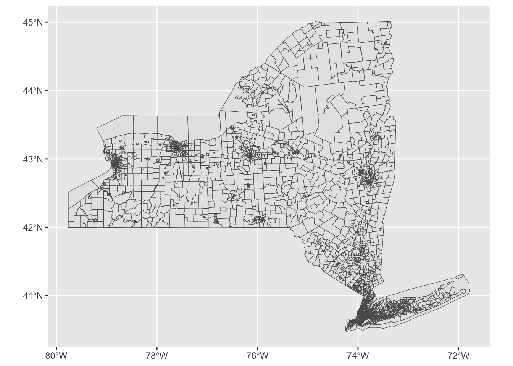
That looks roughly like the state of New York. Congratulations if this is your first map visualization in RStudio!
We have some things to unpack here. Out tigris call downloaded all tracts for the state of New York. We have tract properties, but then a list of lists in a field called “geometry”. What’s going on here?
Our tract geographies were downloaded in what is known as simple features format. If you have dealt with prior formats for spatial data in R, you’ll understand that simple features really are much simpler! The list that you see here is a list of points that define the vertices, in this case, which represent each tract polygon. Embedding the geometry with data that represents the qualities of each tract is very useful.
We could query down to the counties that define New York City with the information we have in hand:
nyc_trt <- nyc_trt |>
filter(COUNTYFP %in% c("047", "005", "081", "085", "061"))And again, let’s visualize to confirm:
ggplot()+
geom_sf(data=nyc_trt)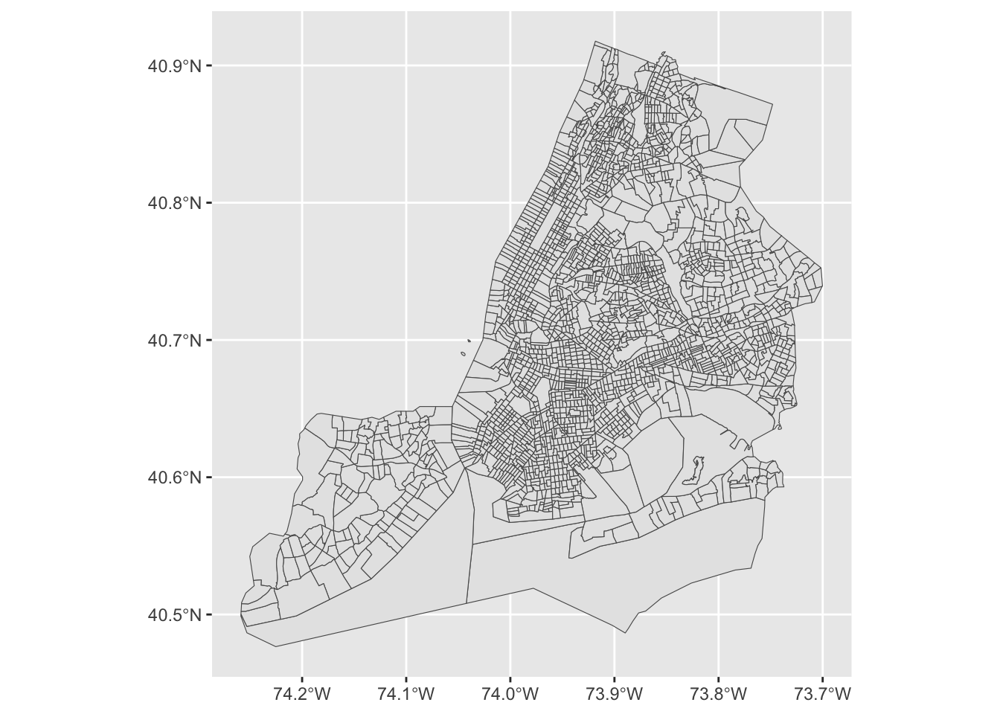
Again, a lot going on here, but we definitely have a subgeography from the New York State data.
While downloading tracts for the whole state and then querying out NYC counties is ok, tigris, can accept counties as inputs to its API call:
nyc_trt <- tracts(state = "NY", county = c("Bronx", "Kings", "New York", "Queens", "Richmond"), year = 2020)Here we are just specifying counties by name - tigris looks them up and confirms which counties it has downloaded.
Before we get into modifying this geography, let’s transform it to an appropriate projection. The sf (simple features) package can handle this for us with st_transform()
nyc_trt <- nyc_trt |>
st_transform(26918)The string of numbers here refers to the particular transformation we’re doing - in this case to NAD 1983, a common coordinate reference system for the United States.
Our NYC tracts look a little messy - they don’t really look like the shape of New York City. Let’s think about what role water might be playing here. In the tract data, there are fields called ALAND and AWATER which correspond to the tract area that is land and water (respectively). Let’s take a look to see if there are any tracts that are all water:
nyc_trt |>
filter(ALAND == 0)Simple feature collection with 3 features and 12 fields
Geometry type: MULTIPOLYGON
Dimension: XY
Bounding box: xmin: 562802.4 ymin: 4480943 xmax: 605316.4 ymax: 4495548
Projected CRS: NAD83 / UTM zone 18N
STATEFP COUNTYFP TRACTCE GEOID NAME NAMELSAD MTFCC FUNCSTAT
1 36 081 990100 36081990100 9901 Census Tract 9901 G5020 S
2 36 047 990100 36047990100 9901 Census Tract 9901 G5020 S
3 36 085 990100 36085990100 9901 Census Tract 9901 G5020 S
ALAND AWATER INTPTLAT INTPTLON geometry
1 0 130800077 +40.5380517 -073.8942020 MULTIPOLYGON (((581457.1 44...
2 0 17793788 +40.5649788 -074.0148235 MULTIPOLYGON (((580899.6 44...
3 0 81772671 +40.5249107 -074.1091816 MULTIPOLYGON (((562808.8 44...It turns out we have three tracts with no land area and that are all water. Let’s remove them and see what our data looks like:
nyc_trt <- nyc_trt |>
filter(ALAND > 0)
ggplot() +
geom_sf(data=nyc_trt)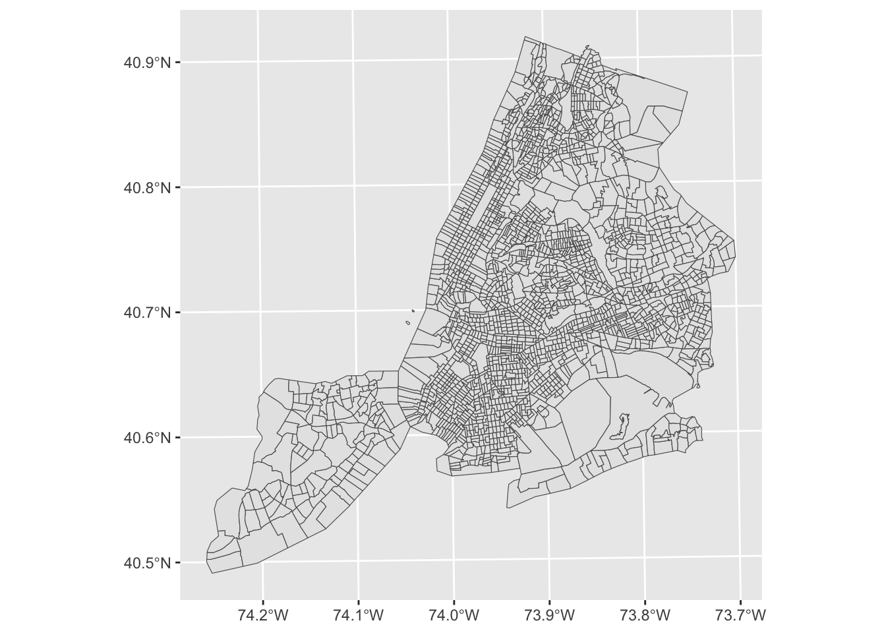
A little better - we dropped a few tracts and can start to see more of the shape of the city. Let’s continue to diagnose what’s going on here by coloring each borough so we can see boundaries:
ggplot() +
geom_sf(data=nyc_trt, aes(fill = COUNTYFP))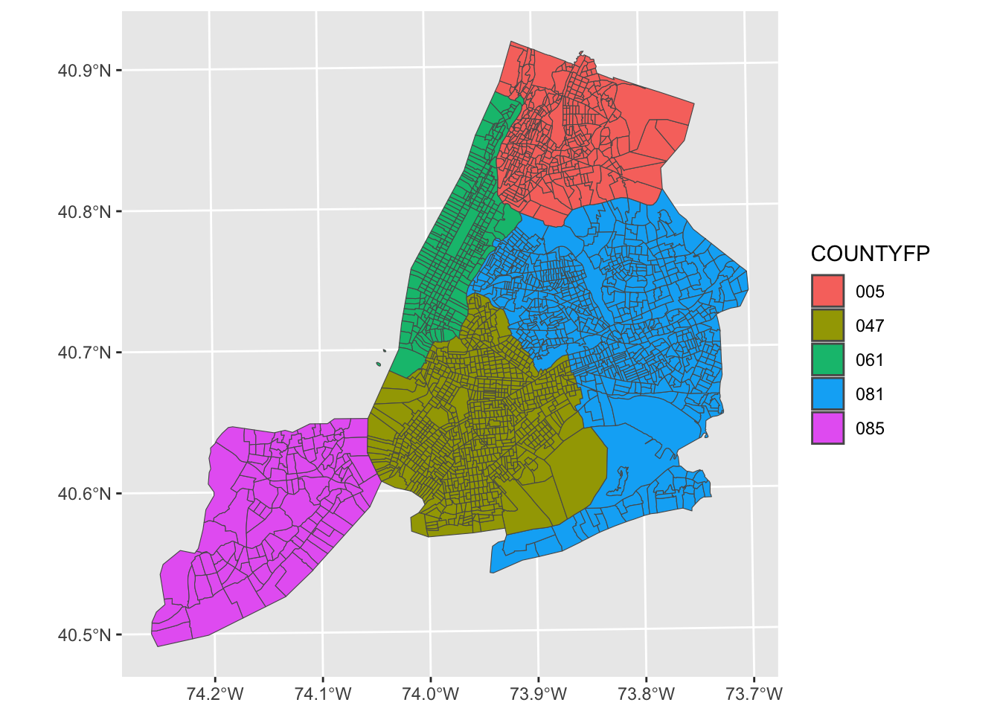
We add an aesthetic mapping to our ggplot() call that assigns a unique color to each county. Referring back to our borough image of New York City, it looks like tracts are continuous with some portions covering parts of water bodies.
Can we do any better? You know the answer is yes! tigris can use census hydrography to clip the portions of tracts that are water:
nyc_trt <- nyc_trt |>
erase_water(area_threshold = .9, year = 2020)Fetching area water data for your dataset's location...Erasing water area...
If this is slow, try a larger area threshold value.You will need to play with the threshold value to get something that looks good. In this case, we’re using a threshold of .9 which means that we are only removing the water areas that represent the largest 10 percent of all water geometries in the map.
Let’s once again visualize to see what we have here:
ggplot() +
geom_sf(data=nyc_trt, aes(fill = COUNTYFP))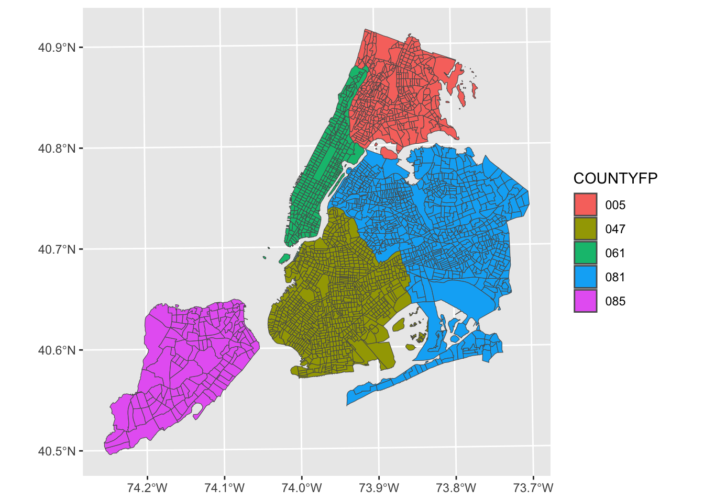
We have a bit more definition now.
Before we move on to adding census data to these tracts, let’s use them to create a new geometry - county boundaries. Yes, we could download them using tigris, but we actually have all the data we need in our tract files.
One very cool think about the implementation of simple features in R is that tidyverse commands like group_by() and summarise() work on them. What if we group tracts by their county identifier and summarise?
nyc_co <- nyc_trt |>
group_by(COUNTYFP) |>
summarise(tracts = n())
ggplot() +
geom_sf(data = nyc_co, aes(fill = COUNTYFP))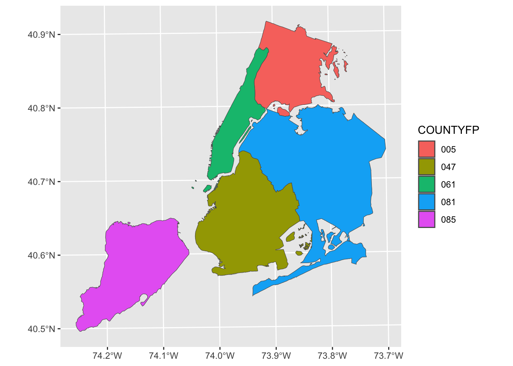
We have now created a custom set of county boundaries for New York City.
I am a big proponent of making many bad maps so that you can progressively refine your visualization to something effective. Let’s think about some key controls for styling our maps.
First, let’s start with our base tract data:
ggplot()+
geom_sf(data = nyc_trt)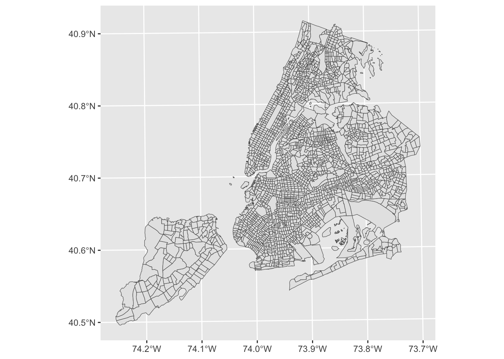
Let’s use a theme to remove some of the shading:
ggplot()+
geom_sf(data = nyc_trt) +
theme_minimal()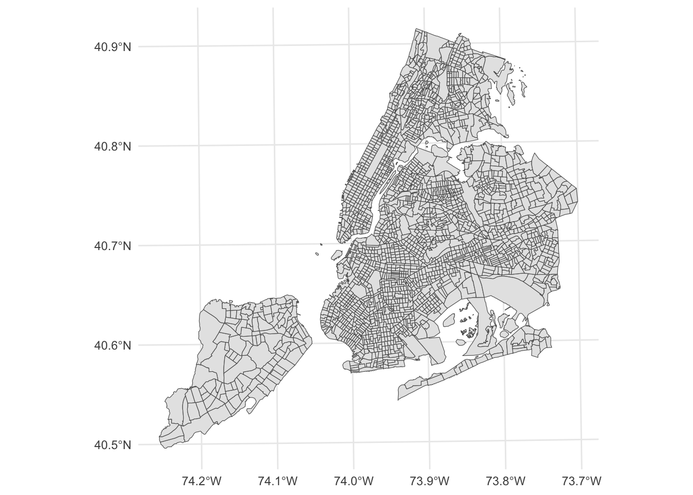
If you don’t want the graticules and latitude / longitude markings, you can either use a theme to remove them:
ggplot()+
geom_sf(data = nyc_trt) +
theme_void()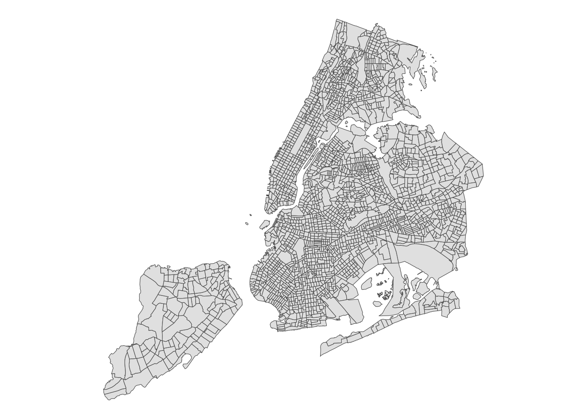
Or you can manually remove them this way:
ggplot()+
geom_sf(data = nyc_trt) +
coord_sf(datum = NA)Let’s add counties as an overlay:
ggplot()+
geom_sf(data = nyc_trt) +
geom_sf(data = nyc_co) +
coord_sf(datum = NA)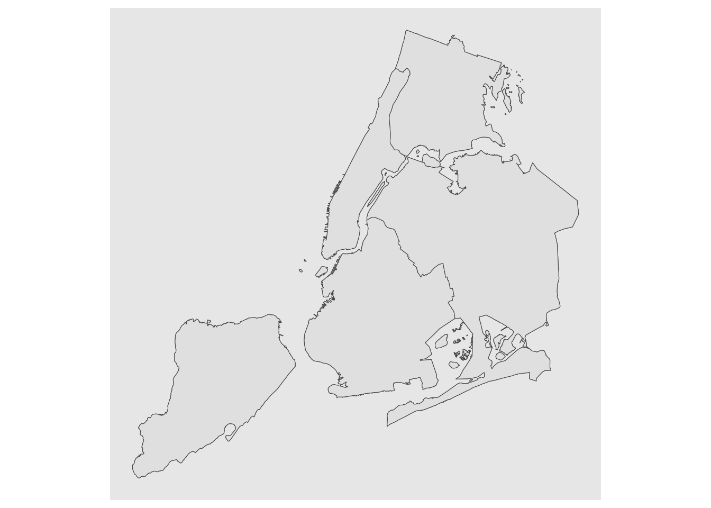
Hmm - where’s our tracts? We can see our counties, but tracts are underneath! Let’s remove the fill from the counties file so we can see the tracts underneath:
ggplot()+
geom_sf(data = nyc_trt) +
geom_sf(data = nyc_co, fill=NA) +
coord_sf(datum = NA)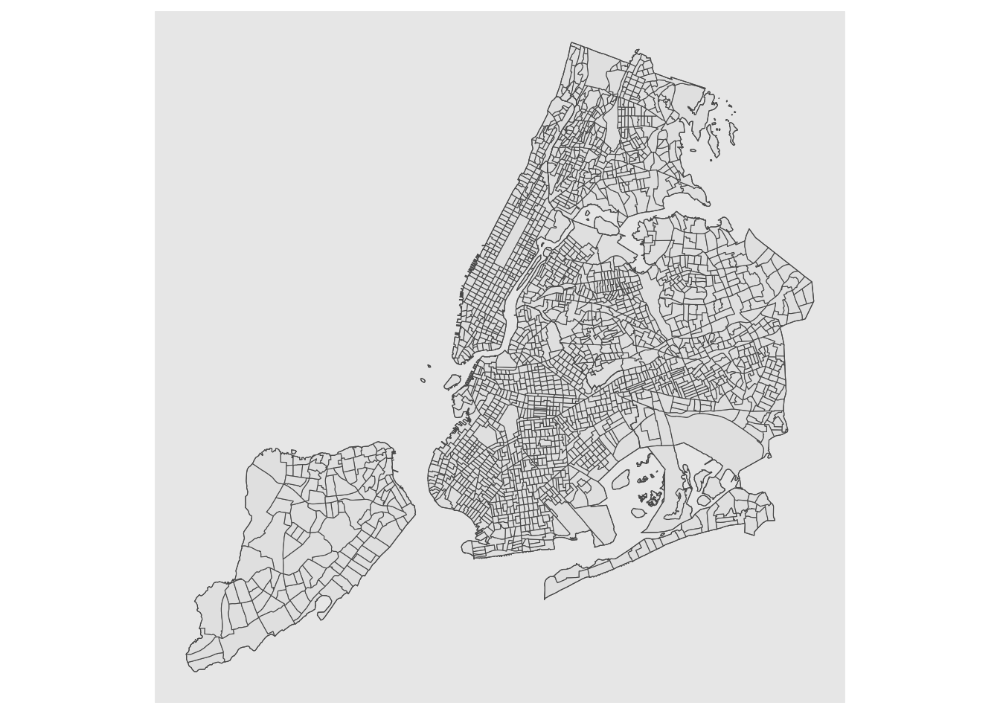
Now we can see the tracts, but what about our counties? Let’s use color to differentiate?
ggplot()+
geom_sf(data = nyc_trt) +
geom_sf(data = nyc_co, fill = NA, color = "blue") +
coord_sf(datum = NA)
Ok - now we can see the counties. Why don’t we try to make the line weight heavier on the county outlines to create more hierarchy here.
ggplot()+
geom_sf(data = nyc_trt) +
geom_sf(data = nyc_co, fill = NA, color = "blue", cex = .7) +
coord_sf(datum = NA)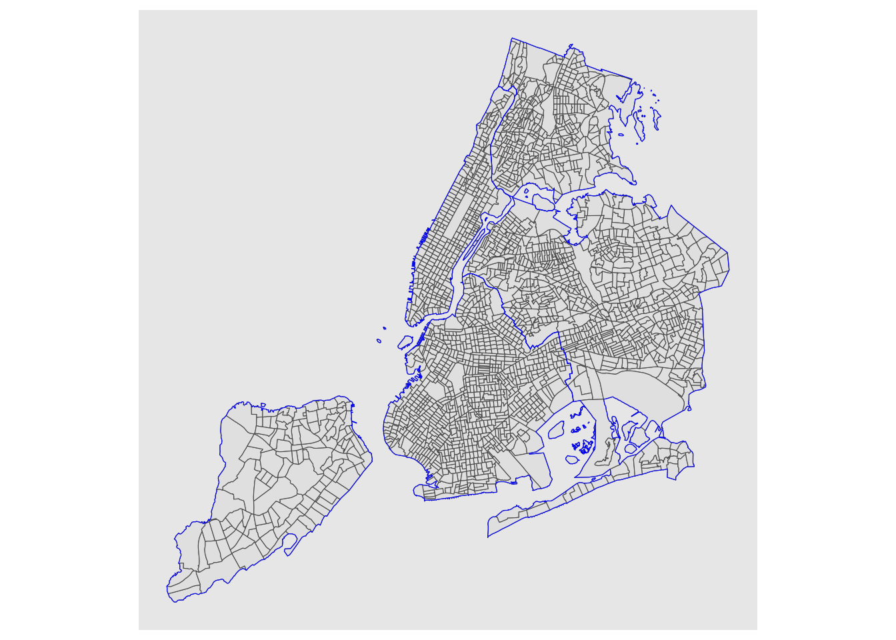
A little thicker. Why don’t we also decrease the line weight of the tracts to help differentiate more?
ggplot()+
geom_sf(data = nyc_trt, cex = .1) + # Decrease the line weight to differentiate
geom_sf(data = nyc_co, fill = NA, color = "blue", cex = .7)+ # Increase the line weight to differentiate
coord_sf(datum = NA)
That’s starting to look better. Maybe now we can try again but using only gray lines:
ggplot()+
geom_sf(data = nyc_trt, cex = .1, color = "gray70", fill = NA) + # Decrease the line weight to differentiate
geom_sf(data = nyc_co, fill = NA, color = "gray30", cex = .6)+ # Increase the line weight to differentiate
coord_sf(datum = NA) +
theme_minimal()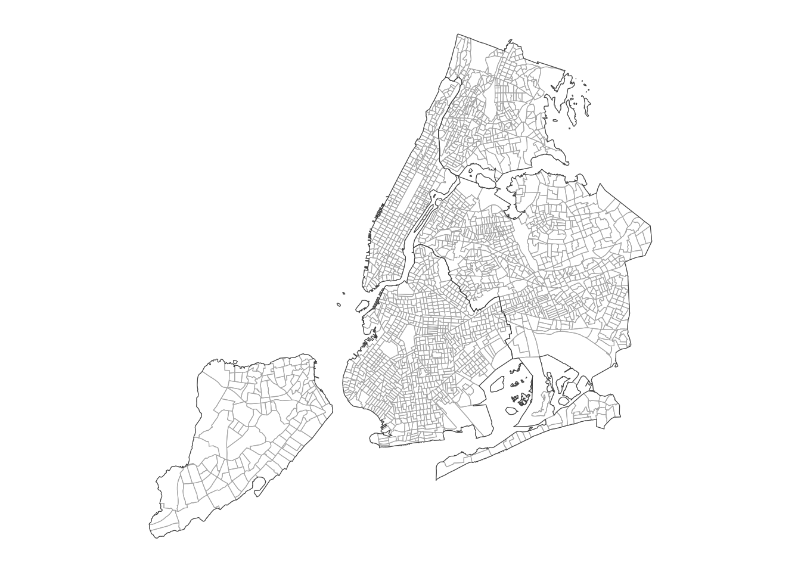
Let’s consider this “styled’ enough for now…
For the purposes of our example, we’ll examine racial segregation in New York City. Let’s start by downloading and preparing data on race for New York City.
Let’s download 2020 census tract boundaries for New York City’s five Boroughs. While we’re at it, we’ll clean them up a little bit.
| FIPS Code | County Name | Borough Name |
|---|---|---|
| 36047 | Kings County | Brooklyn |
| 36005 | Bronx County | Bronx |
| 36081 | Queens County | Queens |
| 36085 | Richmond County | Staten Island |
| 36061 | New York County | Manhattan |
nyc_trt <- tracts(state = "NY", county = c("005", "047", "061", "081", "085"), year = 2020) |>
st_transform(26918) |>
filter(ALAND != 0) |>
erase_water(area_threshold = .9, year = 2020)The code above is accomplishing the following things:
Let’s use ggplot() to visualize so that we can confirm what we’ve downloaded is indeed New York City’s boroughs:
ggplot()+
geom_sf(data=nyc_trt)Next, we’ll download ACS data on race for New York City. We’ll focus on 2020 data from the 5-year ACS from Table B03002.
To keep things organized, let’s define the variables we want to download. Note that we’re defining variable names as well as values. To facilitate some of our later operations, let’s download these data in wide format rather than tidy format. In wide format, we’ll have one observation (row) for each census tract, with multiple columns containing estimates for each population subgroup and the total population.
dl_vars <- c(
White = "B03002_003",
Black = "B03002_004",
Native = "B03002_005",
Asian = "B03002_006",
HIPI = "B03002_007",
Hispanic = "B03002_012",
Poptot = "B03002_001"
)
# Our tidycensus download call:
nyc_race <- get_acs(
geography = "tract",
state = "NY",
county = c("Bronx", "Kings", "New York", "Queens", "Richmond"),
variables = dl_vars,
year = 2020,
output = "wide"
)
nyc_race |>
slice_head(n = 5) |>
gt()| GEOID | NAME | WhiteE | WhiteM | BlackE | BlackM | NativeE | NativeM | AsianE | AsianM | HIPIE | HIPIM | HispanicE | HispanicM | PoptotE | PoptotM |
|---|---|---|---|---|---|---|---|---|---|---|---|---|---|---|---|
| 36047009202 | Census Tract 92.02, Kings County, New York | 328 | 96 | 162 | 129 | 0 | 12 | 1037 | 293 | 0 | 12 | 1904 | 630 | 3453 | 653 |
| 36047009401 | Census Tract 94.01, Kings County, New York | 132 | 72 | 173 | 245 | 0 | 12 | 1582 | 389 | 0 | 12 | 406 | 283 | 2293 | 380 |
| 36047009402 | Census Tract 94.02, Kings County, New York | 377 | 198 | 38 | 57 | 0 | 12 | 1903 | 586 | 0 | 12 | 271 | 213 | 2746 | 553 |
| 36047009600 | Census Tract 96, Kings County, New York | 1035 | 313 | 78 | 60 | 0 | 17 | 1993 | 519 | 0 | 17 | 2629 | 629 | 5858 | 710 |
| 36047009800 | Census Tract 98, Kings County, New York | 218 | 83 | 162 | 160 | 0 | 17 | 2306 | 504 | 0 | 17 | 3275 | 740 | 6021 | 798 |
Note that this code defines the list of specific variables to download (rather than a whole table), asks tidycensus to download the data, and labels each column with the label we have defined (with E and M denoting estimates and margins of error because this is sample-based data).
While we’re at it, let’s separate our tract name label into separate tract, county, and state values.
nyc_race <- nyc_race |>
separate(NAME, into = c("Tract", "County", "State"), sep = ", ")Note the use of sep = ", " includes the space after the comma so we don’t have an extra space in our resulting county and state variables.
Before we further manipulate our data, let’s aggregate the data we have to form county population summaries. Because our tract data is hierarchical, we can sum up our population estimates from tracts to counties to produce county population totals. While we’re at it, we’ll also use the county FIPS codes to create a Borough identifier (we could also add county labels back as well).
nyc_race_co <-
nyc_race |>
group_by(STCO = substr(GEOID, 0, 5)) |>
summarise(
co_WhiteE = sum(WhiteE, na.rm = TRUE),
co_WhiteM = moe_sum(WhiteM, WhiteE),
co_BlackE = sum(BlackE, na.rm = TRUE),
co_BlackM = moe_sum(BlackM, BlackE),
co_NativeE = sum(NativeE, na.rm = TRUE),
co_NativeM = moe_sum(NativeM, NativeE),
co_AsianE = sum(AsianE, na.rm = TRUE),
co_AsianM = moe_sum(AsianM, AsianE),
co_HIPIE = sum(HIPIE, na.rm = TRUE),
co_HIPIM = moe_sum(HIPIM, HIPIE),
co_HispanicE = sum(HispanicE, na.rm = TRUE),
co_HispanicM = moe_sum(HispanicM, HispanicE),
co_PoptotE = sum(PoptotE, na.rm = TRUE),
co_PoptotM = moe_sum(PoptotM, PoptotE),
) |>
mutate(Borough =
case_when(
STCO == "36005" ~ "Bronx",
STCO == "36047" ~ "Brooklyn",
STCO == "36061" ~ "Manhattan",
STCO == "36081" ~ "Queens",
STCO == "36085" ~ "Staten Island")
)Let’s walk through this:
group_by() to aggregate our tract-level data to counties. In this case, we are pulling out the first five digits from the combined state-county-tract FIPS code (substr(GEOID, 0, 5)) using the substr() command from the stringr package. This allows us to create a combined state and county FIPS code (the state is the first two digits - 36 in the case of New York - and the county is the next three digits).summarise() to create summary values for counties. We use sum() on our population estimates to sum up populations for tracts into county totals. We use moe_sum() from the tidycensus() package to properly aggregate margins of error accounting for the size of the population estimate being aggregated. The census provides documentation on what’s implemented in tidycensus. We denote that these are county estimates by including co_ as a prefix - you’ll see why later.case_when() construct borough labels from our combined state and county FIPS codes.As a result, we have a table containing county populations and margins of error for the boroughs of New York City:
| STCO | co_WhiteE | co_WhiteM | co_BlackE | co_BlackM | co_NativeE | co_NativeM | co_AsianE | co_AsianM | co_HIPIE | co_HIPIM | co_HispanicE | co_HispanicM | co_PoptotE | co_PoptotM | Borough |
|---|---|---|---|---|---|---|---|---|---|---|---|---|---|---|---|
| 36005 | 128,717 | 3,742 | 411,293 | 8,800 | 2,882 | 727 | 53,498 | 3,097 | 374 | 198 | 799,765 | 12,002 | 1,427,056 | 14,216 | Bronx |
| 36047 | 938,573 | 10,493 | 754,576 | 10,307 | 3,053 | 638 | 304,420 | 6,367 | 1,009 | 480 | 486,272 | 9,181 | 2,576,771 | 17,237 | Brooklyn |
| 36061 | 763,202 | 11,503 | 199,377 | 6,238 | 1,960 | 581 | 196,097 | 6,049 | 430 | 237 | 418,442 | 9,769 | 1,629,153 | 16,500 | Manhattan |
| 36081 | 559,778 | 8,090 | 385,868 | 7,374 | 5,561 | 948 | 584,214 | 9,369 | 832 | 271 | 631,657 | 10,976 | 2,270,976 | 16,687 | Queens |
| 36085 | 286,462 | 6,247 | 43,941 | 2,970 | 515 | 243 | 47,194 | 2,905 | 55 | 127 | 87,733 | 4,193 | 475,596 | 7,858 | Staten Island |
Let’s create a more polished table showing the population by race for each NYC Borough:
nyc_race_co |>
mutate(other = co_NativeE+co_HIPIE) |>
select(Borough, co_WhiteE, co_BlackE, co_AsianE, co_HispanicE, other, co_PoptotE) |>
gt() |>
fmt_number(2:7, decimals = 0) |>
cols_label(
co_WhiteE = "White",
co_BlackE = "Black",
co_AsianE = "Asian",
co_HispanicE = "Hispanic",
other = "Other",
co_PoptotE = "Total"
)| Borough | White | Black | Asian | Hispanic | Other | Total |
|---|---|---|---|---|---|---|
| Bronx | 128,717 | 411,293 | 53,498 | 799,765 | 3,256 | 1,427,056 |
| Brooklyn | 938,573 | 754,576 | 304,420 | 486,272 | 4,062 | 2,576,771 |
| Manhattan | 763,202 | 199,377 | 196,097 | 418,442 | 2,390 | 1,629,153 |
| Queens | 559,778 | 385,868 | 584,214 | 631,657 | 6,393 | 2,270,976 |
| Staten Island | 286,462 | 43,941 | 47,194 | 87,733 | 570 | 475,596 |
Note the strategic use of an “Other” category which combines the Native American and Hawaiian Island and Pacific Islander categories.
We now have three resources available to us:
These three pieces of information can form the basis for manipulation and analysis of dimensions of racial segregation in New York City.
Let’s now turn towards the measures of segregation.
Dissimilarity is a common measure of evenness between two populations - dissimilarity measures the distribution of a minority population within a majority population. Conceptually, dissimilarity measures the proportion of that minority or subgroup population that would need to move in order to be equally distributed with the majority population. A dissimilarity score of 0 would mean a completely even distribution of a minority population amongst a majority population (no segregation). A dissimilarity score of 100 would mean a completely segregated minority population (100 percent of the minority population would need to move to achieve an even distribution amongst the population. Dissimilarity is calculated as follows:
\(D = .5*\sum_i |\frac{b_i}{B}-\frac{w_i}{W}|\)
where \(b_i\) is the number of blacks in tract i
\(B\) is the number of blacks for the county
\(w_i\) is the number of whites in tract i
\(W\) is the number of whites for the county
Now that we know the formula, we can start thinking about how to implement this in R with dplyr.
This looks complicated, but we can actually do this fairly simply with dplyr notation. Let’s start off by calculating Black-White dissimilarity.
We have our white and black tract population data already in our il_trt data, and we have our county data in a separate object. Let’s go ahead and join that county data to our tract data.
nyc_race<-left_join(nyc_race |> mutate(STCO = substr(GEOID, 0,5)), nyc_race_co, by= "STCO")Notice that this join looks pretty standard with the exception of nyc_race |> mutate(STCO = substr(GEOID, 0,5)). When we created our county-level summaries of the tract-level data, we created a new variable called STCO which is the combined city and county FIPS codes. In order to join those data to our tract data, we need to temporarily create the same code from our GEOID field in the tract data. The mutate statement temporarily creates the STCO column in the nyc_race data, and the join can be performed denoting the common column, STCO.
Now that we’ve joined these together, we can start breaking down the dissimilarity formula into code-able pieces. Inside the absolute value we are calculating fractions of tract minority and majority populations compared to their county. We then subtract these from each other and use abs() to find the absolute value. After that, we need to sum these all up and multiply by .5. We are calculating these by county, so we can use group_by() to sum up only the data for each county to produce a series of final dissimilarity statistics for each county in New York City. For other regions, you might end up calculating dissimilarity for multiple counties within a region.
nyc_race |>
mutate(dissim_wb = abs(BlackE / co_BlackE - WhiteE / co_WhiteE)) |>
group_by(Borough) |>
summarise(dissimilarity = .5*sum(dissim_wb)) |> gt()| Borough | dissimilarity |
|---|---|
| Bronx | 0.7107378 |
| Brooklyn | 0.7731939 |
| Manhattan | 0.7057447 |
| Queens | 0.8146201 |
| Staten Island | 0.7226401 |
How would you interpret these black-white dissimilarity values? Where is Black-White dissimilarity the highest within the region? Where is it the lowest?
nyc_race |>
mutate(dissim_nww = abs((PoptotE-WhiteE) / (co_PoptotE-co_WhiteE) - WhiteE / co_WhiteE)) |>
group_by(Borough) |>
summarise(dissimilarity = .5*sum(dissim_nww)) |>
gt()| Borough | dissimilarity |
|---|---|
| Bronx | 0.6311840 |
| Brooklyn | 0.5502573 |
| Manhattan | 0.5144714 |
| Queens | 0.5274621 |
| Staten Island | 0.4167665 |
Compare and contrast this with Black-White dissimilarity - what do you observe?
nyc_race |>
mutate(dissim_lw = abs(HispanicE / co_HispanicE - WhiteE / co_WhiteE)) |>
group_by(Borough) |>
summarise(dissimilarity = .5*sum(dissim_lw)) |>
gt()| Borough | dissimilarity |
|---|---|
| Bronx | 0.6244812 |
| Brooklyn | 0.5451200 |
| Manhattan | 0.6129532 |
| Queens | 0.5070836 |
| Staten Island | 0.4122438 |
Compare and contrast this with Black-White dissimilarity - what do you observe?
A second common measure of segregation is interaction which is a measure of exposure. Interaction measures the likelihood of population subgroups interacting with one another based upon their distribution within areal sub units (tracts). For instance, Black-White interaction is calculated as follows:
\(Interaction = \sum_i\frac{b_i}{B}*\frac{w_i}{t_i}\)
Where
\(b_i\) is the Black population of tract i
\(B\) is the Black population of the county
\(w_i\) is the White population of tract i
\(t_i\) is the total population of tract i
Given that there are some similarities to the dissimilarity index, modify your existing code to measure Black White interaction for counties in the New York City:
nyc_race |>
mutate(interaction_bw = ((BlackE / co_BlackE) * (WhiteE / PoptotE))) |>
group_by(Borough) |>
summarise(interaction = sum(interaction_bw, na.rm=TRUE)) |>
gt()| Borough | interaction |
|---|---|
| Bronx | 0.04468322 |
| Brooklyn | 0.13499725 |
| Manhattan | 0.22647975 |
| Queens | 0.07750034 |
| Staten Island | 0.27902540 |
The output here is actually a probability that ranges from 0 to 1. A value closer to 1 indicates a higher probability of there being contact between these two population groups. A value closer to 0 indicates lower probabilities of contact.
Provide your interpretation of Black-White Interaction for New York City boroughs.
nyc_race |>
mutate(interaction_bw = ((PoptotE-WhiteE) / (co_PoptotE-co_WhiteE) * WhiteE / PoptotE)) |>
group_by(Borough) |>
summarise(interaction = sum(interaction_bw, na.rm=TRUE)) |>
gt()| Borough | interaction |
|---|---|
| Bronx | 0.0630752 |
| Brooklyn | 0.2310775 |
| Manhattan | 0.3196593 |
| Queens | 0.1771489 |
| Staten Island | 0.4523662 |
nyc_race |>
mutate(interaction_bw = (HispanicE / co_HispanicE * WhiteE / PoptotE)) |>
group_by(Borough) |>
summarise(interaction = sum(interaction_bw, na.rm=TRUE)) |>
gt()| Borough | interaction |
|---|---|
| Bronx | 0.06632347 |
| Brooklyn | 0.26564666 |
| Manhattan | 0.27182625 |
| Queens | 0.20714070 |
| Staten Island | 0.46687669 |
How would you interpret Black-White, Non-White White, and Latino-White interaction jointly?
The final measure of racial segregation we’ll look at in this lab is isolation which is only measured for one group at a time. Isolation measures the likelihood of contact for a subgroup with other subgroup members. It is interpreted similarly to Interaction (as a probability ranging from 0 to 1):
Isolation for Blacks
\(Isolation = \sum_i\frac{b_i}{B}*\frac{b_i}{t_i}\)
Where
\(b_i\) is the Black population of tract i
\(B\) is the Black population of the county
\(t_i\) is the total population of tract i
Let’s calculate Black Isolation:
nyc_race |>
mutate(isolation_bw = (BlackE / co_BlackE * BlackE / PoptotE)) |>
group_by(Borough) |>
summarise(isolation = sum(isolation_bw, na.rm=TRUE)) |>
gt()| Borough | isolation |
|---|---|
| Bronx | 0.4180943 |
| Brooklyn | 0.6295217 |
| Manhattan | 0.3457500 |
| Queens | 0.5888139 |
| Staten Island | 0.3198306 |
You know what comes next. Let’s calculate Nonwhite Isolation and Latino Isolation and interpret what you see.
nyc_race |>
mutate(isolation_bw = ((PoptotE - WhiteE) / (co_PoptotE - co_WhiteE) * (PoptotE-WhiteE) / PoptotE)) |>
group_by(Borough) |>
summarise(isolation = sum(isolation_bw, na.rm=TRUE)) |>
gt()| Borough | isolation |
|---|---|
| Bronx | 0.9369248 |
| Brooklyn | 0.7689225 |
| Manhattan | 0.6803407 |
| Queens | 0.8228511 |
| Staten Island | 0.5476338 |
nyc_race |>
mutate(isolation_bw = (HispanicE / co_HispanicE * HispanicE / PoptotE)) |>
group_by(Borough) |>
summarise(isolation = sum(isolation_bw, na.rm=TRUE)) |>
gt()| Borough | isolation |
|---|---|
| Bronx | 0.6313472 |
| Brooklyn | 0.3350622 |
| Manhattan | 0.4678842 |
| Queens | 0.4283512 |
| Staten Island | 0.2666154 |
Provide your interpretation of how isolation differs for these groups and for each borough.
While we’re at it, let’s also pay attention to segregation on the basis of income. A simple measure of income inequality and distribution is to calculate the difference in median income between the county and the census tracts that make up the county.
We have all of our census tract geographic data, but need to go back to census data to download tract and county median household income data (this is not a place to take the average or weighted average of the tract-level data). Let’s download and prepare these as a new dataset. Median household income is contained in ACS table B19013:
dl_vars <- c(
MHHI = "B19013_001")
# Our tidycensus download call:
nyc_income <- get_acs(
geography = "tract",
state = "NY",
county = c("Bronx", "Kings", "New York", "Queens", "Richmond"),
variables = dl_vars,
year = 2020,
output = "wide"
)
dl_vars <- c(
co_MHHI = "B19013_001")
nyc_income_co <- get_acs(
geography = "county",
state = "NY",
county = c("Bronx", "Kings", "New York", "Queens", "Richmond"),
variables = dl_vars,
year = 2020,
output = "wide"
)
nyc_income |>
slice_head(n = 5) |>
gt()| GEOID | NAME | MHHIE | MHHIM |
|---|---|---|---|
| 36047009202 | Census Tract 92.02, Kings County, New York | 41563 | 18846 |
| 36047009401 | Census Tract 94.01, Kings County, New York | 51346 | 13554 |
| 36047009402 | Census Tract 94.02, Kings County, New York | 58750 | 10259 |
| 36047009600 | Census Tract 96, Kings County, New York | 62614 | 13004 |
| 36047009800 | Census Tract 98, Kings County, New York | 56229 | 7251 |
Let’s also take a look at our county income table:
nyc_income_co |>
slice_head(n=5) |>
gt()| GEOID | NAME | co_MHHIE | co_MHHIM |
|---|---|---|---|
| 36061 | New York County, New York | 89812 | 1681 |
| 36085 | Richmond County, New York | 85381 | 2396 |
| 36005 | Bronx County, New York | 41895 | 624 |
| 36047 | Kings County, New York | 63973 | 679 |
| 36081 | Queens County, New York | 72028 | 691 |
And now let’s join the two together (again creating our state and county FIPS codes from our combined state, county, and tract FIPS codes):
nyc_income <- left_join(nyc_income |> mutate(STCO = substr(GEOID, 0, 5)), nyc_income_co, by=c("STCO" = "GEOID"))Now we can calculate the ratio of income for our census tract to that of the county:
nyc_income <-nyc_income |>
mutate(inc_ratio = MHHIE / co_MHHIE)Now let’s map out this income ratio statistic for New York City tracts:
nyc_income <- left_join(nyc_income, nyc_trt, by="GEOID") |> st_as_sf()
ggplot()+
geom_sf(data=nyc_income, aes(fill=inc_ratio), colour = NA)+
labs(title = "New York City Borough Income Ratio", fill = "Income Ratio")+
theme_minimal()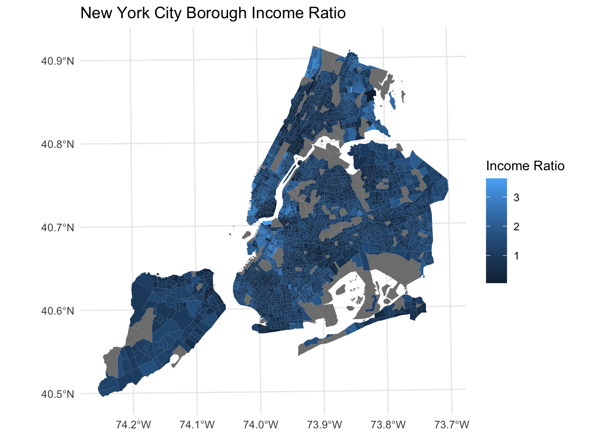
What would a ratio of 1 indicate? What would a ratio of 3 indicate? Where do we see big differences?
While we’re at it, it might be interesting to create a scatter plot that illustrates the relationship between racial concentration and income. To do this, we’ll need to join together our two datasets.
nyc_dataset <- left_join(nyc_race, nyc_income |> st_set_geometry(NULL)|> select(GEOID, MHHIE, MHHIM, co_MHHIE, co_MHHIM, inc_ratio), by="GEOID")Let’s plot the Percent White on the X axis and the income ratio on the y axis using geom_point):
ggplot()+
geom_point(data=nyc_dataset, aes(x=(WhiteE/PoptotE), y=inc_ratio), cex = .5, alpha = .2) +
labs(title = "My Cool Plot", x = "Percent White", y = "Income Ratio") +
scale_x_continuous(labels = scales::percent)+
theme_minimal()
How would you describe this relationship?
Now see if you can add a linear line of best fit to these data using geom_smooth (you’ll need to set method = lm to get a fitted linear model):
ggplot()+
geom_point(data=nyc_dataset, aes(x=(WhiteE/PoptotE), y=inc_ratio), cex = .5, alpha = .2) +
geom_smooth(data=nyc_dataset, method = "lm", aes(x=(WhiteE/PoptotE), y=inc_ratio), alpha = .5)+
labs(title = "Tract Income Ratio by White Population", x = "Percent White", y = "Income Ratio") +
scale_x_continuous(labels = scales::percent)+
theme_minimal()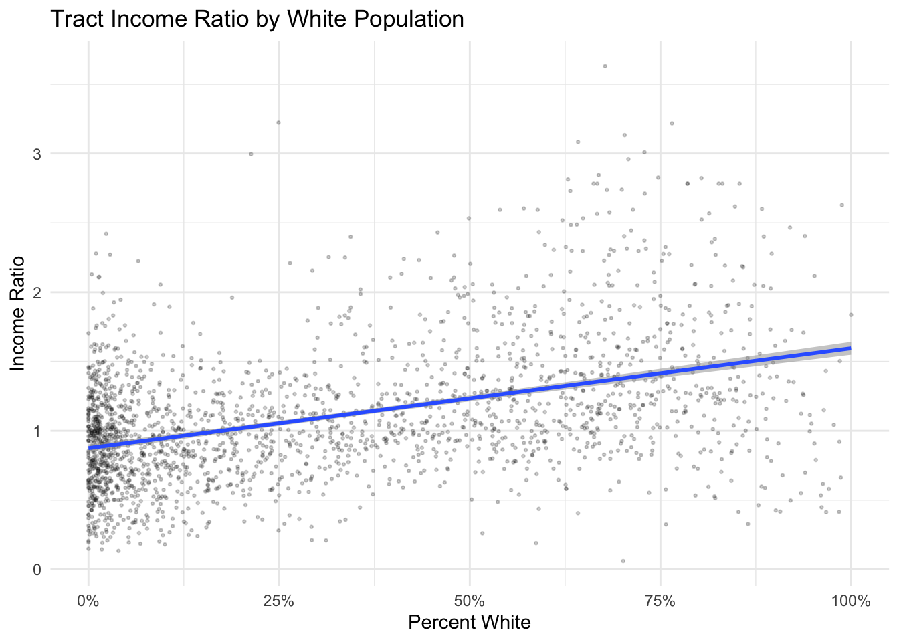
What’s the relationship between the percent white population and the income ratio?
What would it look like to split this out by boroughs using facets?
ggplot()+
geom_point(data=nyc_dataset, aes(x=(WhiteE/PoptotE), y=inc_ratio), cex = .5, alpha = .2) +
geom_smooth(data=nyc_dataset, method = "lm", aes(x=(WhiteE/PoptotE), y=inc_ratio), alpha = .5)+
labs(title = "Tract Income Ratio by White Population", x = "Percent White", y = "Income Ratio") +
scale_x_continuous(labels = scales::percent)+
theme_minimal()+
facet_wrap(~Borough)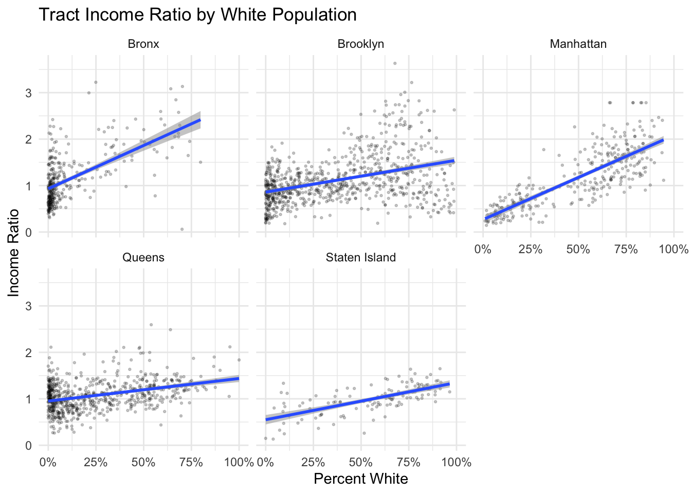
How would you describe the differences observed by boroughs?
Congratulations, you have learned some ways to calculate common measures of segregation, and have applied these measures as part of a data pipeline.
By changing your download calls at the very beginning of this lab where you download ACS data, you could easily create segregation measures for other places (note that you would have to re-label some elements where we indicate boroughs which are counties within New York City).
Now that you have some new tools that you are familiar with, start exploring these data more. Make maps for other racial groups. Explore dimensions of segregation for other groups.
Can you produce the data which would populate a summary table of minority-majority dissimilarity? Which groups face the highest levels of segregation?
How does income relate to levels of segregation? Think about how you might use the median household income statistic to explore the relationship.
What are other forms of segregation that might be useful to explore (aside from racial and income segregation)?
In evaluating your lab submission, we’ll be paying attention to the following:
As you get into the lab, please feel welcome to ask us questions, and please share where you’re struggling with us and with others in the class.